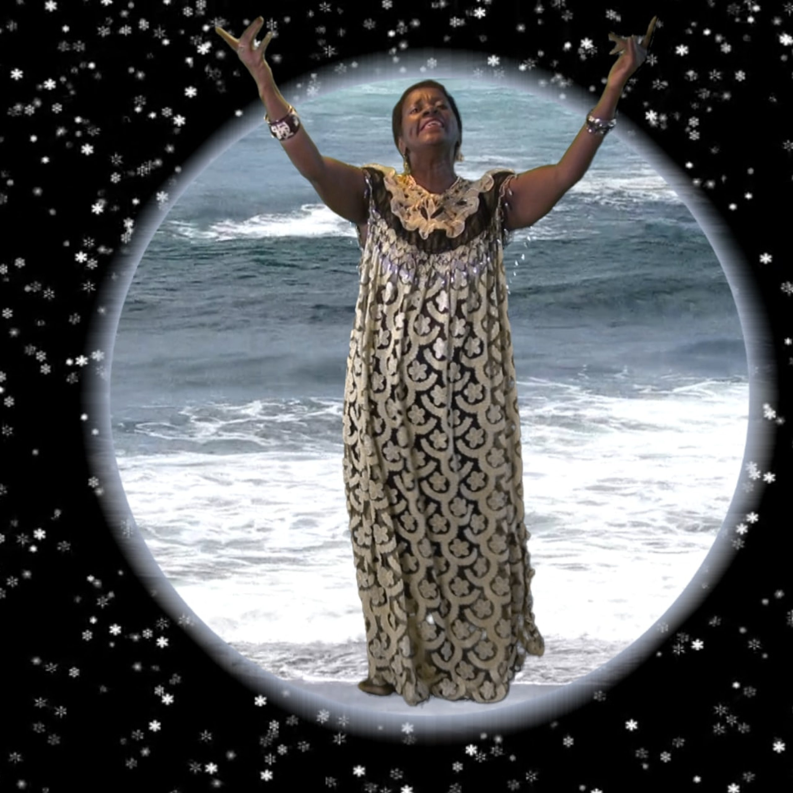
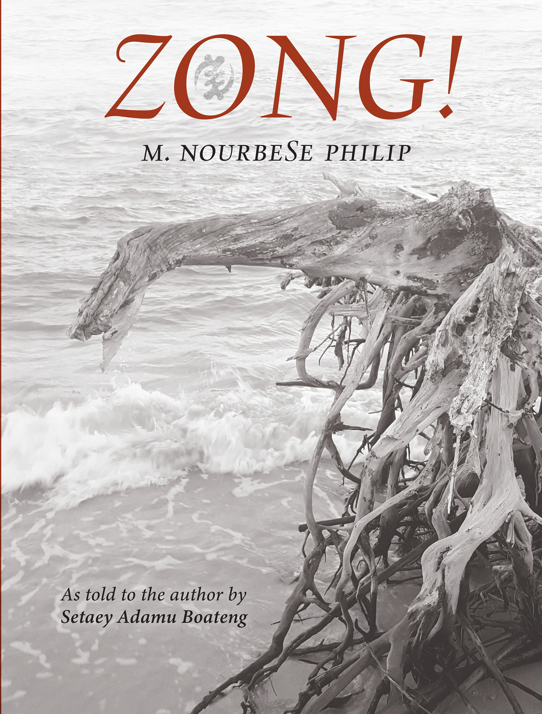
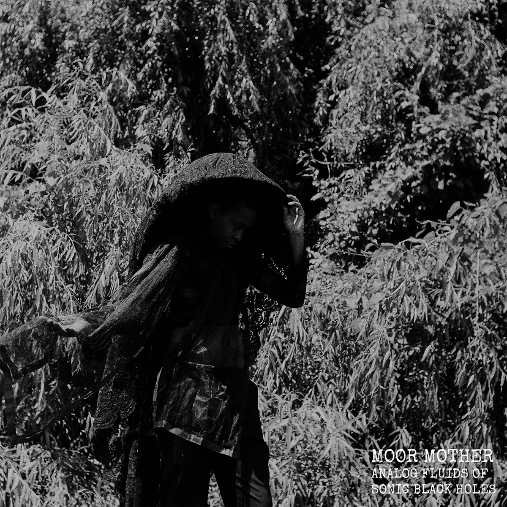
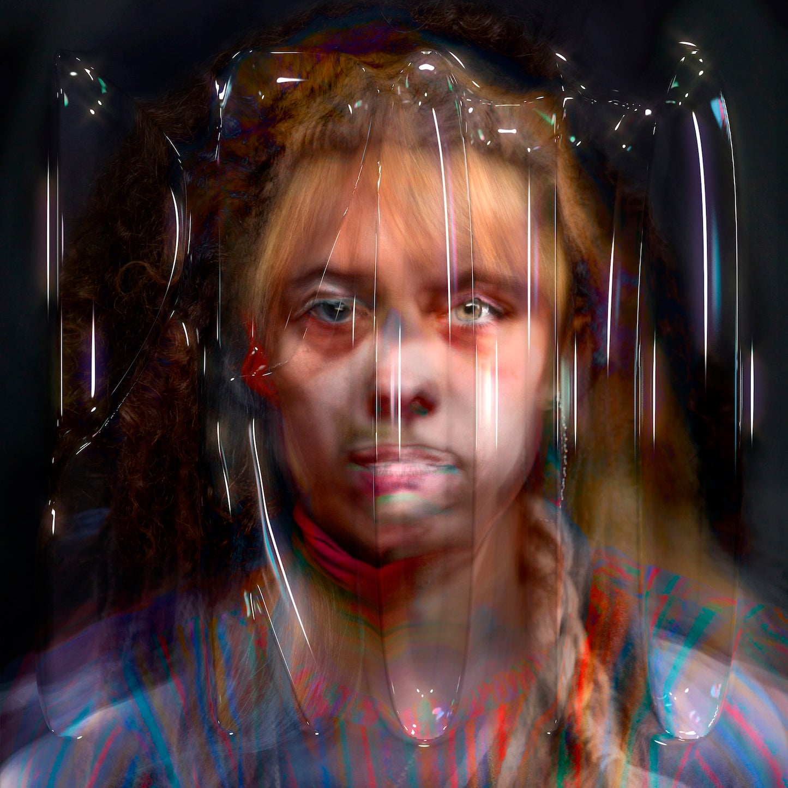
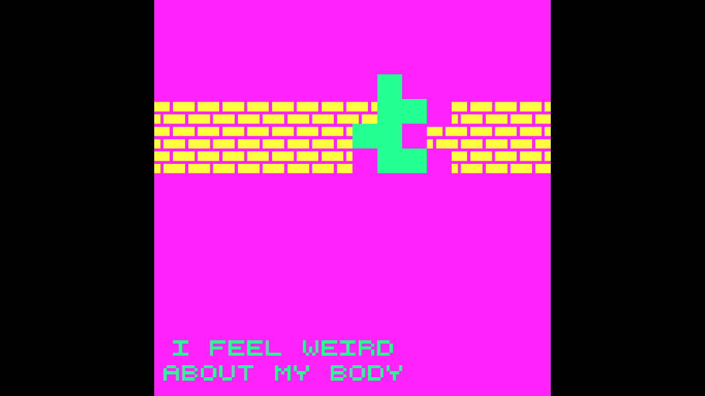

Leitura-base do curso
HESSEL, Katy. A história da arte sem os homens. Rio de Janeiro: Intrínseca, 2023.
SENAC Lapa Scipião · Pós-graduação em Fotografia
Uma página de apoio para reconhecer onde a arte contemporânea opera quando a obra se faz em rede, texto, escuta, algoritmo ou jogo.
Página de apoio · 2000–2026
Fotografia, pintura, escultura e performance continuam decisivas para a disciplina. Esta página acompanha outras frentes em que problemas já trabalhados no curso reaparecem: arquivo, autoria, infraestrutura, temporalidade, participação, corpo, circulação e memória. O foco recai sobre o que cada prática altera nas condições da experiência artística, em vez de somar suportes a um campo já conhecido.
Pontes com Katy Hessel
Katy Hessel não discute diretamente os cinco casos desta página. Eles são aproximados aqui por fontes próprias, indicadas ao final de cada bloco. O que o livro oferece é um conjunto de perguntas transferíveis: a recusa de hierarquias entre formas artísticas, a responsabilidade pelos recortes que organizam uma história e a compreensão de que o presente reúne temporalidades, crises e práticas que não cabem numa linha única.
| Problema em Hessel | Ponte para esta página | Cuidado metodológico |
|---|---|---|
| Hierarquia dos meios | Se a história da arte valorizou certas formas em detrimento de outras, precisamos perguntar o que muda quando obra é código, voz, livro, plataforma ou regra de jogo. | Não basta declarar que tudo é arte. É preciso descrever como a obra organiza material, tempo, acesso e relação. |
| Narrativa situada | Uma obra pode reordenar um arquivo jurídico, uma rota submarina, um repertório vocal ou uma experiência corporal sem produzir uma memória neutra. | Situar autoria, fonte, dispositivo e condições de circulação. |
| Presente não linear | Colonialismo, escravidão, tecnologia de rede e inteligência artificial aparecem como tempos sobrepostos, não como passado superado. | Evitar a ideia de inovação técnica como sinônimo de emancipação. |
Leitura de apoio: Katy Hessel, A história da arte sem os homens, especialmente as seções finais “Onde estamos agora?” e “Quem escreve a história da arte?”. As aproximações desta página são formulações didáticas da disciplina.
Seis frentes de pesquisa
1 · Arte, tecnologia e infraestrutura
Deep Down Tidal (2017) parte dos cabos de fibra óptica submarinos para relacionar telecomunicação, rotas coloniais, travessias forçadas, corpos afogados, conhecimento negro e cosmologias da água. Dados viajam por uma infraestrutura material instalada sobre trajetos já marcados pela violência colonial.
O caso prolonga a discussão do contra-arquivo da Aula 4. As histórias sedimentadas no próprio dispositivo que transmite imagens e informações passam ao primeiro plano. Tecnologia e história se constituem mutuamente.

Tabita Rezaire, 2017. Vídeo, 18 min. 41 s.
Ver contexto e obra ↗
Imagem fixa: cortesia da artista, via 1-54.
Na apresentação da obra, a própria artista descreve sua investigação das redes transoceânicas e dos efeitos políticos e tecnológicos da água como interface de comunicação. A ficha de Deep Down Tidal ↗ explicita a relação entre cabos submarinos e rotas coloniais. Ver também a apresentação da obra pela Serpentine ↗.
2 · Literatura, arquivo e linguagem
Em Zong! (2008), poema de fôlego construído a partir de um processo jurídico ligado ao massacre do navio negreiro Zong, M. NourbeSe Philip desmonta a linguagem legal em fragmentos, silêncios, repetições e respirações. A forma expõe a violência de um documento capaz de registrar pessoas escravizadas como perda econômica e questão de seguro.
O livro desloca para a página problemas que vimos em Doris Salcedo, Kara Walker e Gustavo Caboco: como trabalhar com um vestígio produzido por uma instituição violenta? Falha, corte e ilegibilidade passam a operar como crítica, sem a pretensão de completar o documento com uma voz transparente.

M. NourbeSe Philip, 2008. Poema-livro.
Ver edição e informações do livro ↗
Capa da edição de aniversário: Graywolf Press.
A Poetry Foundation ↗ caracteriza Zong! como poema polivocal sobre escravidão e sistema jurídico, que requer atenção a sílaba, fragmento, som e espaço. A autora mantém uma página de publicações ↗ que identifica a edição original de 2008.
3 · Som, escuta e temporalidade
Em Analog Fluids of Sonic Black Holes (2019), Camae Ayewa, que trabalha sob o nome Moor Mother, faz convergir poesia falada, ruído, hip-hop, eletrônica, vozes e arquivos sonoros. Em vez de converter história em narrativa estável, a montagem produz colisões e retornos: o ouvinte encontra temporalidades negras que não obedecem ao ritmo limpo da cronologia oficial.
O som torna palpável uma dimensão que as imagens às vezes ocultam: escutar é ocupar duração. A obra exige que prestemos atenção a ritmo, ruído, repetição, saturação, pausa e inteligibilidade parcial. Isso aproxima a escuta da questão trabalhada com Hessel: que história se forma quando recusamos uma linha única e um sujeito soberano que a narra?

Camae Ayewa / Moor Mother, 2019. Álbum, 13 faixas.
Ouvir o álbum ↗
Capa: Moor Mother / Don Giovanni Records, via The Vinyl Factory.
Institute of Contemporary Arts ↗ apresenta Moor Mother como Camae Ayewa, musicista, poeta e artista visual, cuja prática de Black Quantum Futurism articula conexões entre passado, presente e futuros. A página do álbum Analog Fluids of Sonic Black Holes ↗ registra seu lançamento em 2019 e suas faixas.
4 · Voz, inteligência artificial e autoria
O álbum PROTO (2019), de Holly Herndon, reúne vocalistas, desenvolvedores e Spawn, sistema de aprendizagem de máquina treinado para processos vocais. Regras, dados, decisões técnicas e formas de colaboração tornam-se audíveis na construção de uma voz produzida com inteligência artificial.
Esse caso atualiza a questão da autoria da Aula 2. A inteligência artificial torna urgente identificar trabalho, consentimento, treinamento, infraestrutura e crédito. Interessa examinar quais relações de poder, extração e participação estão inscritas no sistema, antes de atribuir criatividade a uma máquina.

Holly Herndon, 2019. Álbum e processos de performance com IA.
Ouvir o álbum ↗
Capa: Holly Herndon / 4AD, via RVNG Intl.
A gravadora 4AD ↗ informa que PROTO foi lançado em 10 de maio de 2019 e realizado com Spawn, vocalistas, desenvolvedores e colaboradoras. O texto associa o trabalho àquilo que Herndon chama de “era dos protocolos”, isto é, às disputas em torno de protocolos de IA e de internet.
5 · Jogos, interface e experiência situada
Dys4ia (2012), de Anna Anthropy, organiza episódios curtos e interativos em torno de uma experiência autobiográfica de disforia de gênero e terapia hormonal. Regras, obstáculos, falhas e ritmos fazem a interface participar da narrativa, evidenciando como corpo e instituição se encontram em protocolos, formulários, consulta, linguagem e acesso.
Para a disciplina, o jogo pede uma leitura que leve sua forma a sério. A escolha de uma ação, sua resistência e seu fracasso são parte da obra. A participação, como em Lygia Clark e Lygia Pape, ocorre num campo projetado e revela os limites que o próprio dispositivo estabelece.

Anna Anthropy, 2012. Jogo autobiográfico.
Ver obra e contexto de exibição ↗
Imagem do jogo: Anna Anthropy, via ZKM.
O arquivo da University of California, Santa Barbara ↗ descreve Dys4ia como jogo autobiográfico sobre a experiência de terapia de reposição hormonal de Anthropy. A autora se apresenta como designer, educadora e cyborg em sua página de links ↗.
6 · Fotografia, duração e diário performativo
Em 365 Days: A Catalogue of Tears, realizado ao longo de 2010 e apresentado em 2011, Laurel Nakadate se fotografou antes, durante e depois de chorar, todos os dias, durante um ano. A série resulta de uma performance duracional e organiza o autorretrato como prática de repetição, exposição e montagem. Cada imagem pertence a um calendário, mas o conjunto evita a promessa de acesso integral a uma interioridade.
O trabalho conversa com a Aula 2, especialmente com Nan Goldin e Cindy Sherman, sem se confundir com nenhuma das duas. A fotografia guarda um acontecimento corporal e fabrica uma imagem para ele; também torna visível a decisão de transformar a tristeza em método, sequência e arquivo público. A pergunta decisiva recai sobre a duração: o que a repetição modifica na leitura de um afeto que uma imagem isolada poderia transformar em mero episódio?
O MoMA PS1 ↗ apresenta a série como performance de um ano iniciada em 1º de janeiro de 2010. O Bowdoin College Museum of Art ↗ registra que a artista se fotografou diariamente e apresenta uma seleção de obras. O Ackland Art Museum ↗ disponibiliza informações sobre dez fotografias da série e suas fichas técnicas.
Uma comparação possível
| Obra | O que ela coloca em crise | Relação com a disciplina |
|---|---|---|
| Deep Down Tidal | A neutralidade da rede e a separação entre tecnologia, território e colonialidade. | Arquivo, infraestrutura e memória material. |
| Zong! | A autoridade da linguagem jurídica e a fantasia de um arquivo capaz de falar por si. | Contra-arquivo, ausência e atribuição de voz. |
| Analog Fluids of Sonic Black Holes | A cronologia homogênea e a separação entre documento, poesia e ruído. | Temporalidade, memória e escuta. |
| PROTO | A autoria individual isolada e a suposta neutralidade dos sistemas de IA. | Trabalho, crédito, instituição e mediação técnica. |
| Dys4ia | A separação entre forma de jogo, experiência corporal e norma social. | Participação, corpo e dispositivo. |
| 365 Days: A Catalogue of Tears | A fotografia como captura pontual de uma emoção privada. | Arquivo afetivo, performance, duração e circulação da intimidade. |
Referências e créditos
HESSEL, Katy. A história da arte sem os homens. Rio de Janeiro: Intrínseca, 2023.
As páginas institucionais, autorais, editoriais e de arquivo usadas em cada bloco estão vinculadas nos respectivos detalhes. Elas sustentam os dados factuais e não substituem leitura direta das obras.
Esta seleção é situada e incompleta. Seu objetivo é abrir rotas de pesquisa, não estabelecer um novo cânone de linguagens contemporâneas.